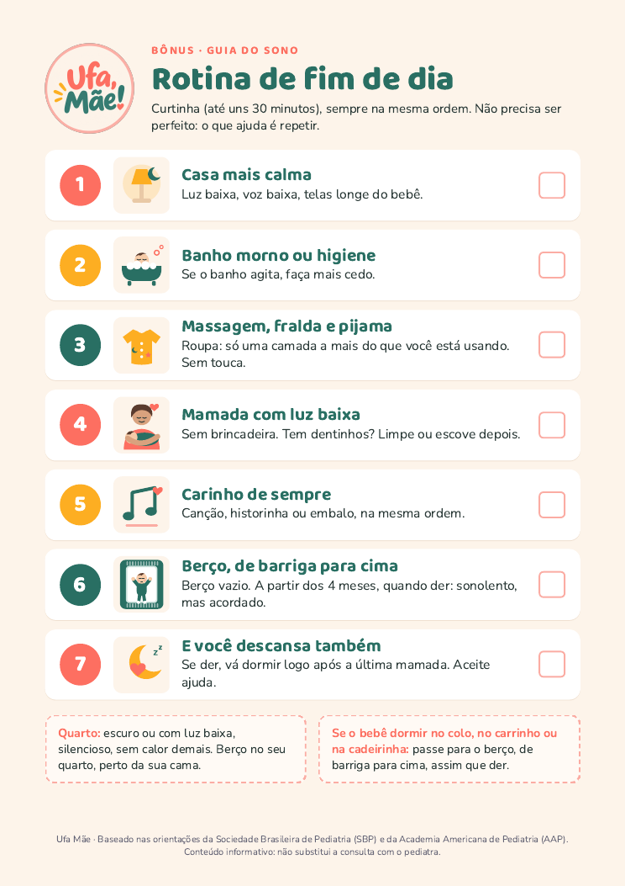
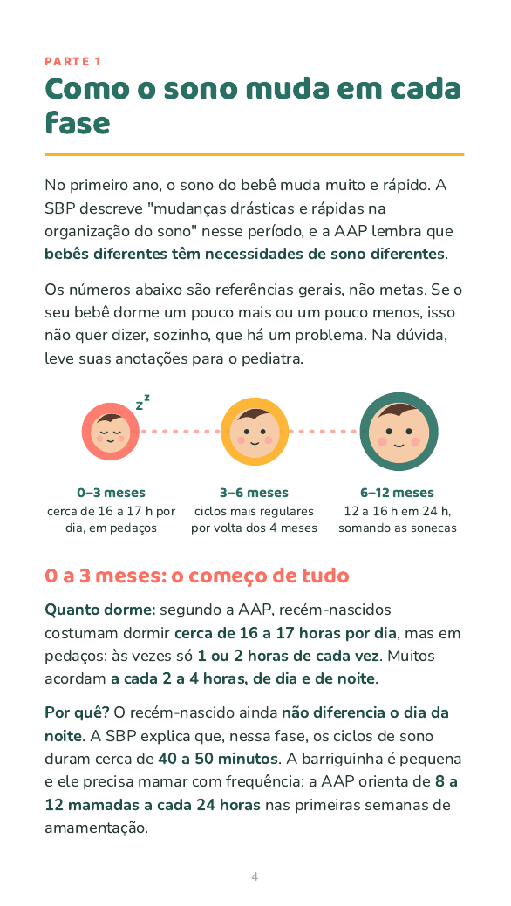
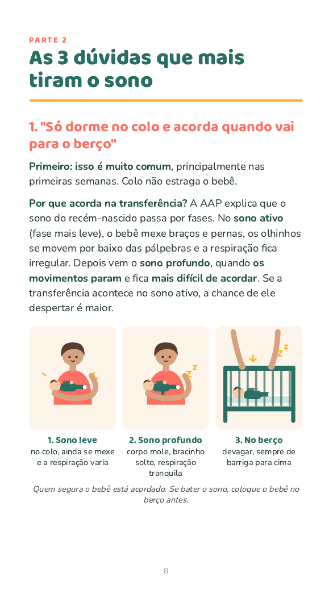
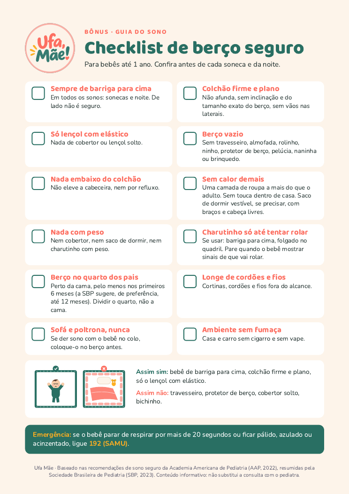

Bônus 1
Quadro da rotina
A rotina de fim de dia pra imprimir e deixar na geladeira.
Para bebês de 0 a 12 meses
Um guia curto pra mães, com base nas orientações da SBP e da AAP, pra entender o sono do seu bebê e deixar o fim do dia mais leve, com sono seguro.
R$ 27,00 pagamento único
Você não está fazendo nada errado. O sono do bebê muda o tempo todo, e quase ninguém explica isso de um jeito simples.
Ele só dorme no colo e acorda quando você coloca no berço.
Trocou o dia pela noite.
Acorda pra mamar e você não sabe se é fome ou costume.
Se alguma dessas é a sua noite, esse guia foi feito pra você.
PDF de 25 páginas pra bebês de 0 a 12 meses, com 15 referências da SBP e da AAP. Pra ler no celular, inclusive de madrugada.

Como o sono muda em cada fase

As 3 dúvidas que mais tiram o sono
Junto com o guia, você recebe dois imprimíveis. São parte da oferta de R$ 27,00.

A rotina de fim de dia pra imprimir e deixar na geladeira.

Pra conferir antes de deitar o bebê, com as orientações de sono seguro.
Que quer entender o que está acontecendo e montar uma rotina mais leve, sem culpa.
Se o seu bebê tem algum problema de saúde, a conversa é com o pediatra.
Assinado pela marca Ufa Mãe, com base nas orientações da SBP e da AAP.
Guia do sono — Ufa Mãe
Um guia curto pra mães de bebês de 0 a 12 meses entenderem o sono do bebê e deixarem o fim do dia mais leve, com sono seguro.
R$ 27,00
pagamento único, sem mensalidade
Quero o Guia do sonoGuia em PDF, 25 páginas
Chega no seu e-mail depois do pagamento
2 bônus pra imprimir
Garantia de 7 dias
Garantia de 7 dias pela plataforma. Se não fizer sentido pra você, o valor volta.
Ninguém pode prometer isso, e desconfie de quem promete. O guia te ajuda a entender o que está acontecendo e a montar uma rotina mais leve.
Pra bebês de 0 a 12 meses.
Não. Ele complementa, e dúvida de saúde vai sempre pro pediatra.
Pela Kiwify. O PDF chega no seu e-mail logo depois do pagamento.